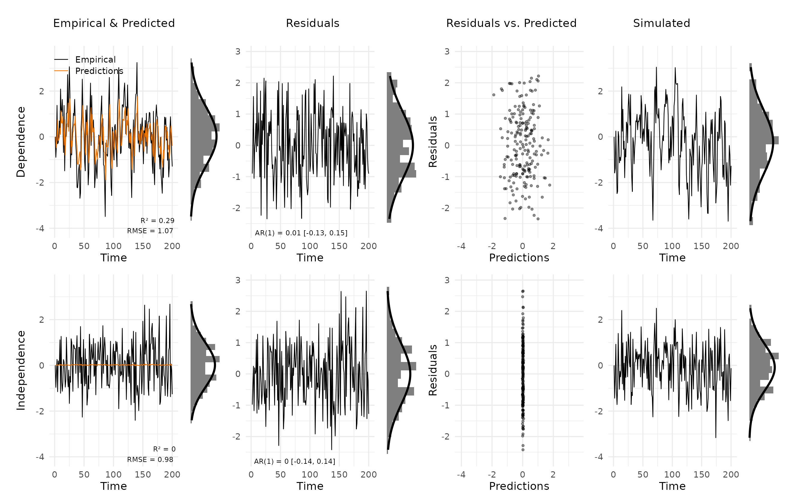
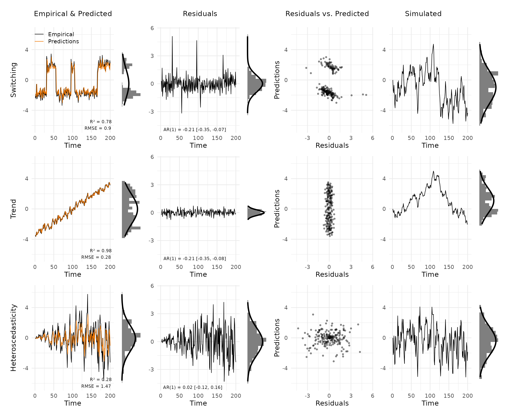
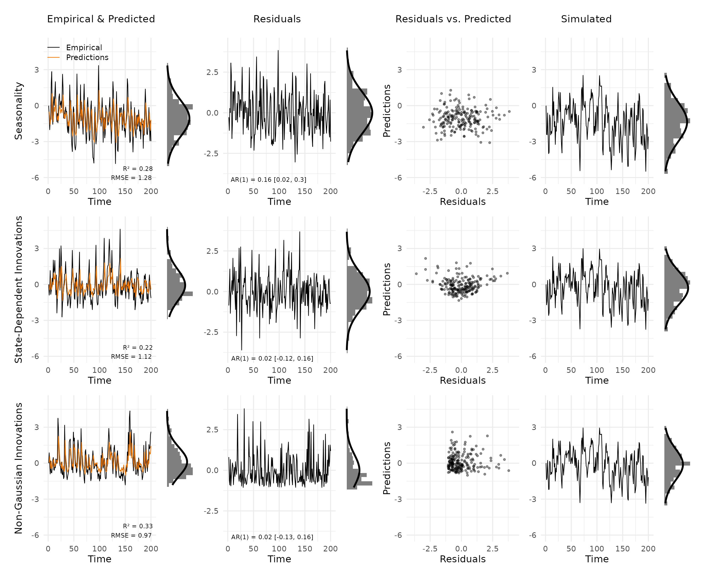

This vignette reproduces the simulated examples from Haslbeck et al. (2026), which use AR(1) processes to illustrate what each type of model misfit looks like in the diagnostic grid. Eight data-generating models (DGMs) are considered: two correctly specified and six misspecified.
Helper functions
Two short functions stand in for a full modelling package: one fits an AR(1) model and returns predictions and residuals, the other simulates a new trajectory from the fitted model for the posterior predictive panel.
fit_ar1 <- function(x) {
n <- length(x)
mod <- lm(x[-1] ~ x[-n])
xhat <- c(NA, predict(mod))
res <- x - xhat
list(mod = mod, xhat = xhat, res = res, res_var = sd(res, na.rm = TRUE))
}
sim_ar1 <- function(fit, n, seed = 92) {
b <- fit$mod$coefficients
xsim <- numeric(n)
set.seed(seed)
for (i in 2:n) xsim[i] <- b[1] + b[2] * xsim[i - 1] + rnorm(1, 0, fit$res_var)
xsim
}Generate data and fit AR(1)
In the following, we simulate eight different data-generating mechanisms for which an AR model is either correctly specified (DGMs 1-2) or misspecified in a particular way (DGMs 3-8). We stick to the AR model for simplicity and interpretability, but the same workflow applies to any VAR model fitted with your preferred package. The key point is that the diagnostic grid takes the outputs of your existing workflow and turns them into a structured plot; it does not fit models itself.
Specifically, we simulate the following processes:
- DGM 1: correctly specified, AR > 0
- DGM 2: correctly specified, AR = 0 (white noise)
- DGM 3: linear trend
- DGM 4: state switching / non-linear
- DGM 5: heteroscedasticity (growing innovation variance)
- DGM 6: seasonality (weekend effect)
- DGM 7: state-dependent innovations
- DGM 8: non-Gaussian innovations (exponential)
N <- 200
# DGM 1: correctly specified, AR > 0
set.seed(2)
x1 <- numeric(N)
for (i in 2:N) x1[i] <- 0.6 * x1[i - 1] + rnorm(1)
# DGM 2: correctly specified, AR = 0 (white noise)
set.seed(3)
x2 <- numeric(N)
for (i in 2:N) x2[i] <- rnorm(1)
# DGM 3: trend
set.seed(2)
x3 <- numeric(N); x3[1] <- -15
for (i in 2:N) x3[i] <- 0.6 * x3[i - 1] + rnorm(1) - 6 + 0.06 * i
x3 <- (x3 / sd(x3)) * 2
# DGM 4: switching / non-linear
x4 <- c(rep(-2, 30), rep(2, 25), rep(-2, 40), rep(2, 10),
rep(-2, 60), rep(2, 35)) + rnorm(N, sd = 0.5)
# DGM 5: heteroscedasticity (growing innovation variance)
set.seed(2)
x5 <- numeric(N)
for (i in 2:N) x5[i] <- 0.6 * x5[i - 1] + rnorm(1, sd = 0.1 + 0.012 * i)
# DGM 6: seasonality (weekend effect)
set.seed(4)
weekend <- rep(c(rep(0, 5), rep(1, 2)), 29)[1:N]
x6 <- numeric(N)
for (i in 2:N) x6[i] <- -1 + 2 * weekend[i] + 0.6 * x6[i - 1] + rnorm(1)
# DGM 7: state-dependent innovations
set.seed(2)
x7 <- numeric(N)
for (i in 2:N) x7[i] <- 0.6 * x7[i - 1] + rnorm(1, sd = 1 + 0.3 * x7[i - 1])
# DGM 8: non-Gaussian innovations (exponential)
set.seed(2)
x8 <- numeric(N)
for (i in 2:N) x8[i] <- -1 + 0.6 * x8[i - 1] + rexp(1)
# Fit AR(1) to each DGM
fits <- lapply(list(x1, x2, x3, x4, x5, x6, x7, x8), fit_ar1)
sims <- lapply(fits, sim_ar1, n = N)Correctly specified models
We combine the two correctly specified models.
new_var_data accepts multiple vectors of empirical data,
predictions, residuals, and simulations as separate columns. The
var_names argument allows us to label each column for the
plot annotation.
vd_correct <- new_var_data(
empirical = cbind(x1, x2),
predicted = cbind(fits[[1]]$xhat, fits[[2]]$xhat),
residuals = cbind(fits[[1]]$res, fits[[2]]$res),
simulated = cbind(sims[[1]], sims[[2]]),
var_names = c("Dependence", "Independence")
)
plot_var_check(vd_correct)
Both models are correctly specified. Empirical and predicted values track closely for the first case, R² is substantial for the autoregressive case and near zero for the white-noise case. This can be expected, since an AR(1) model cannot improve on the mean when the true autocorrelation is zero. The predictions in the second case are close to zero. The estimate of the autocorrelation is close to its true value of zero, so we essentially predict with the mean, which here is zero. Residuals in both rows appear as white noise: the AR(1) annotation is close to zero and the marginal histograms align with the Gaussian overlay. Simulated trajectories are visually indistinguishable from the empirical data.
Main misspecifications
We first combine the three of the most commonly known misspecifications into a single plot to show how they differ from the correctly specified cases. Each of these misspecifications violates a different assumption of the AR(1) model, and therefore produces a distinct pattern in the diagnostic grid.
vd_main <- new_var_data(
empirical = cbind(x4, x3, x5),
predicted = cbind(fits[[4]]$xhat, fits[[3]]$xhat, fits[[5]]$xhat),
residuals = cbind(fits[[4]]$res, fits[[3]]$res, fits[[5]]$res),
simulated = cbind(sims[[4]], sims[[3]], sims[[5]]),
var_names = c("Switching", "Trend", "Heteroscedasticity")
)
plot_var_check(vd_main)
Switching. The data alternates between two discrete levels. The AR(1) model tracks each state reasonably well but fails at transitions, producing large residual spikes. The residual distribution departs from the Gaussian overlay mainly through these extreme values, while the scatter plot shows a distinctly non-linear structure. Simulated data is highly autocorrelated but does not reproduce the switching behavior.
Trend. A linear trend is present in the empirical series but lies outside the AR(1)’s stationary framework. The model still predicts one step ahead very well, so the misfit is easy to miss if one focuses only on prediction error. The clearest signal comes from the simulated trajectory, which shows a highly autocorrelated process that does not follow the observed trend at all.
Heteroscedasticity. Innovation variance grows over time. Early time points are well fitted but the model underestimates variability later in the series. The residual panel shows a widening spread from left to right, whereas the residuals-versus-predictions plot is less informative here because the misspecification concerns variance over time rather than the mean structure. Simulated data has high overall variance but does not reproduce the systematic increase in spread.
Additional misspecifications
Here, we combine three additional misspecifications.
vd_extra <- new_var_data(
empirical = cbind(x6, x7, x8),
predicted = cbind(fits[[6]]$xhat, fits[[7]]$xhat, fits[[8]]$xhat),
residuals = cbind(fits[[6]]$res, fits[[7]]$res, fits[[8]]$res),
simulated = cbind(sims[[6]], sims[[7]], sims[[8]]),
var_names = c("Seasonality", "State-Dependent Innovations", "Non-Gaussian Innovations")
)
plot_var_check(vd_extra)
Seasonality. A weekend effect shifts the mean every seven time points. The resulting regular pattern is visible in the residuals, but this type of misspecification is subtler than the previous ones. The simulated panel is often the clearest cue because the simulated series looks less regular than the empirical one, but even in this plot, this misspecification is hard to detect.
State-dependent innovations. Innovation variance scales with the current value of the process. The scatter plot shows a characteristic funnel pattern: residuals fan out as predicted values increase, indicating that the constant-variance assumption of the AR(1) is violated.
Non-Gaussian innovations. The process uses exponential innovations, producing a right-skewed marginal distribution. The residual histogram deviates clearly from the Gaussian overlay, with a pronounced tail. Simulated data, drawn from a Gaussian model, is symmetric and does not match the skewed empirical distribution.
Reference
Haslbeck, J. M. B., Jongerling, J., Siepe, B. S., Epskamp, S., & Waldorp, L. (2026). Model Checking for Vector Autoregressive Models https://doi.org/10.31234/osf.io/k6uz4_v3